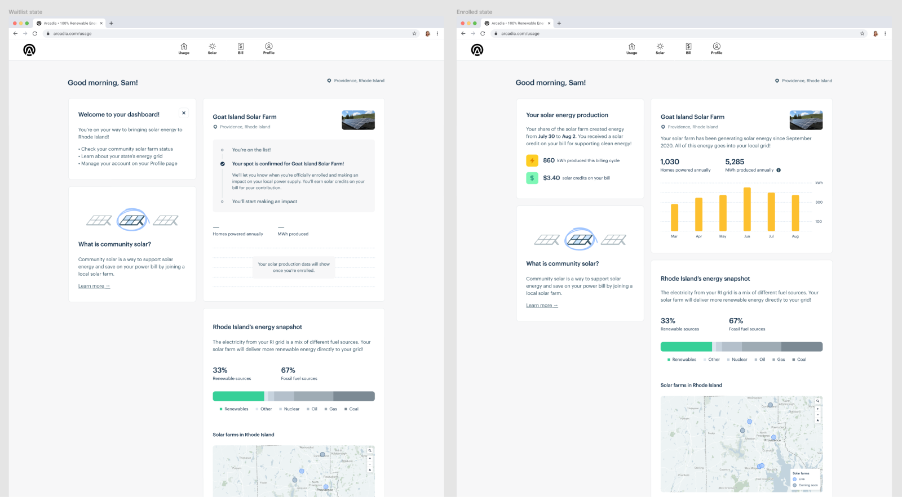
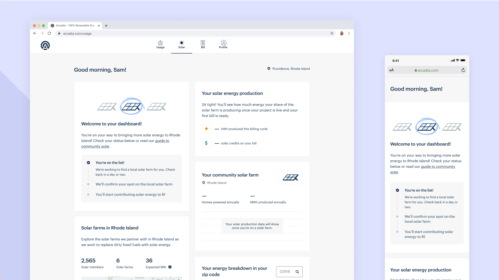
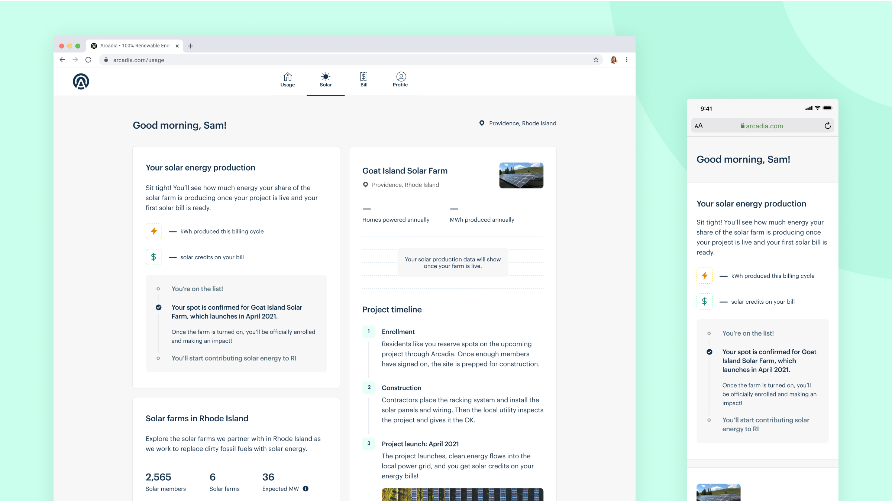

|
Arcadia — Solar Dashboard I led the redesign of the community solar dashboard experience, guiding customers through the steps of joining a local solar project. 
Goals Our new dashboard was originally created for customers who received wind energy certificates (RECs). As Arcadia shifted towards a solar energy focus (Community Solar) and away from wind energy, we needed to update our experience to communicate the value of community solar. Wireframes and user testing Initial sketches and wireframes reframed our Solar page of the dashboard to include modules that emphasized community-level impact and improved community solar comprehension. After collecting feedback from stakeholders, I conducted user tests to see how people interacted with these designs and test product comprehension.
 Initial wireframes for a Waitlist state and Enrolled state  User testing brief & script Final designs User testing revealed that overall, the designs increased comprehension around the enrollment waiting period for joining a community solar project, and some improvements were made to address some points of confusion that were revealed. The final designs focused on clearly explaining the next steps of joining a solar project, along with visualizations of the clean energy impact that the solar projects added to a customer’s local community.
 Pending on a solar project
 On a waitlist for a solar project  Enrolled on a solar project Impact and aftermath The designs were built and released iteratively, and we partnered with Data analytics to track attrition rates throughout further quarters. |
I’m a product designer who has worked on customer-facing web apps, internal tools, and media products. I'm excited about tech & design for social and sustainable impact.
Currently a senior product designer at Arcadia 🌱
Read more..